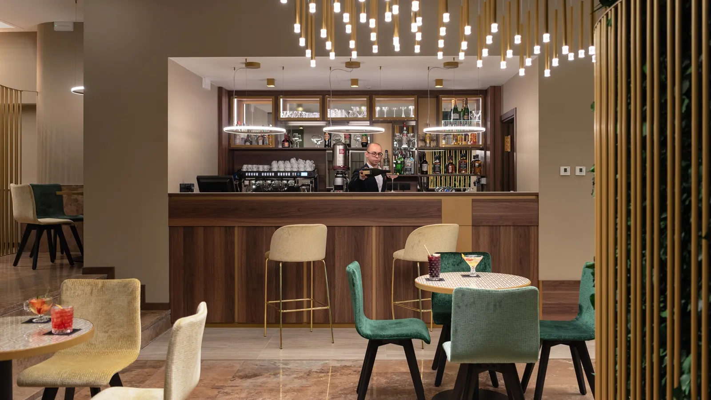
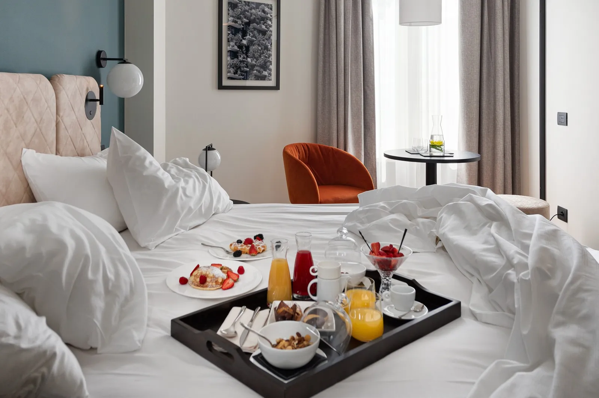

Hotel per i concerti a San Siro e agli I-Days · Tocq Hotel Milano
Vicino al palco non basta.
Dal Tocq la M5 lilla ti porta a San Siro senza cambi. Dopo il concerto torni a Corso Como, non in una via che dorme.
- 8,8/10Expedia · 973 recensioni
- 4,6/5Google
- 9,0/10posizione su Booking.com

La lilla, diretta
Una linea sola, dall'hotel al palco.
- Tocq Hotel MilanoVia Tocqueville 7/D
- 3 min a piedi
- Metro Garibaldi FSlinea M5 lilla
- M5 · 10 fermate · 20 minsenza cambi
- San Siro Stadiocapolinea
- 2–5 min a piedi
- Stadio Meazzaingressi
Per gli I-Days all'Ippodromo SNAI San Siro: stessa linea, scendi a Lotto o a Segesta, circa 15 minuti. Per l'Ippodromo La Maura, scendi a San Siro Stadio e prosegui a piedi.
Calendario concerti 2027 · Stadio e Ippodromo
Il tuo concerto, la tua notte.
Il pulsante apre la prenotazione per la notte del concerto, con la colazione il mattino dopo.
- Giugno 2027
- ZuccheroStadiodata annunciataPrenota le notti
- AnnalisaStadiodata annunciataPrenota le notti
- Blink-182 + Pierce The VeilIppodromo · I-Daysdata annunciataPrenota le notti
- Achille LauroStadiodata annunciataPrenota le notti
- Pinguini Tattici NucleariStadio · 1a datadata annunciataPrenota le notti
- Pinguini Tattici NucleariStadio · 2a datadata annunciataPrenota le notti
- Fontaines D.C.Ippodromo · I-Daysda confermare
- UltimoStadiodata annunciataPrenota le notti
- UltimoStadio · data aggiuntadata annunciataPrenota le notti
- OllyStadio · Olly Stadi 27data annunciataPrenota le notti
- Luglio 2027
- SombrIppodromo · I-Daysda confermare
- Karol GStadiodata annunciataPrenota le notti
In attesa di date ufficiali: Vasco Rossi e Laura Pausini a San Siro 2027, Bresh.
Date dalle fonti ufficiali (organizzatori, Regione Lombardia), aggiornate al 2026-10-26. Controlla sempre il sito dell'evento prima di partire.
Milan e Inter giocano in casa a San Siro quasi ogni settimana: per una partita, scegli tu le date.
Quando scendi dalla lilla
Il concerto finisce. La serata continua.



Il mattino dopo
Dormi. La sveglia non serve.
- Colazione
- Nel weekend fino alle 11:00, anche in camera
- Check-out
- Flessibile la mattina dopo il concerto
- Le valigie
- Alla reception prima del check-in e dopo il check-out
- Il rientro
- Reception 24 ore e guardia notturna all'ingresso
- Per ripartire
- Stazione Garibaldi a 5 minuti, Centrale a due fermate di metro
Lo dicono gli ospiti
Vivace fuori, silenzioso dentro.
C'è rumore la notte?
"Due club vicini e tanto movimento il sabato sera, ma la camera era isolata: i rumori dalla strada non hanno disturbato il sonno."
È comodo da raggiungere?
"Hotel molto comodo, vicinissimo alla stazione Garibaldi."
Ci tornerei?
"È sempre la mia scelta a Milano: il mio hotel preferito, lo staff è il migliore."
Il confronto
Dormire accanto allo stadio, o sulla linea giusta?
| Hotel vicino allo stadio | Tocq Hotel Milano | |
|---|---|---|
| Per arrivare al concerto | A piedi | 20 minuti di M5, senza cambi |
| Dopo il concerto | Zona residenziale, locali chiusi | Corso Como aperto, a un minuto dall'hotel |
| Prima del concerto | Poco intorno | Aperitivo e cena nel quartiere |
| Il giorno dopo | Taxi per la stazione | Garibaldi a 5 minuti, Centrale a 4 di metro, Malpensa Express |
Domande frequenti
Prima di prenotare per un concerto.
La reception risponde 24 ore su 24: +39 02 62071.
Come arrivo allo stadio San Siro dal Tocq Hotel Milano?
E per gli I-Days all'Ippodromo SNAI San Siro?
La metro funziona dopo il concerto?
Perché non dormire vicino allo stadio?
Posso lasciare i bagagli prima o dopo?
Si può dormire al Tocq per una partita di Milan o Inter?
San Siro · Tocq Hotel Milano
Le camere nei weekend di San Siro finiscono con i biglietti.
Hai già la data? Prenota la notte adesso. Con Direct Flex cancelli gratis fino a 24 ore prima.